2. Google Colaboratory 実習
2.1. Google Colaboratory の基本
本講義で使用するコードを実行するにあたって Google Colaboratory というサービスの利用を推奨します。
Google Colaboratory（以下 Colab ）は、クラウド上で Jupyter Notebook 環境を提供する Google のウェブサービスです。Jupyter Notebook はブラウザ上で主に以下のようなことが可能なオープンソースのウェブアプリケーションであり、データ分析の現場や研究、教育などで広く用いられています。
プログラムの実行と、その結果の確認
Markdown と呼ばれる文章を記述するためのマークアップ言語を使った、メモや解説などの記述の追加
Colab では無料で GPU も使用することができますが、そのランタイムは最大 12 時間で消えてしまうため、長時間を要する処理などは別途環境を用意する必要があります。しかし学びはじめのうちは、数分から数時間程度で終わる処理がほとんどであるため、気にする必要はありませんが、本格的に使っていく場合は有料のクラウドサービスを利用するなどして、環境を整えるようにしましょう。有料版を検討される場合はキカガク技術ブログの記事（Google Colab 有料版の料金と内容は？）を参考にして下さい。
以降では、環境構築と基本的な使い方を説明します。
2.2. 環境構築
ここではまず、Google Colaboratory の利用方法を説明します。必要な事前準備は下記 ２ 点です。
ブラウザはどちらでも大丈夫ですが、Chrome を推奨します。
Colab を開く
まずは以下の URL にアクセスして、ブラウザで Google を開き、自分のアカウントにログインしてください。
ログインが完了したら、下記に沿って、Google Drive のページに移動します。Google Drive とはファイルなどを保存することのできるオンラインストレージサービスになります。
Google Drive の右上にある「新規」ボタンをクリックし、下記の手順に沿って、Google Colaboratory を使用できるようにアプリの追加を行います。
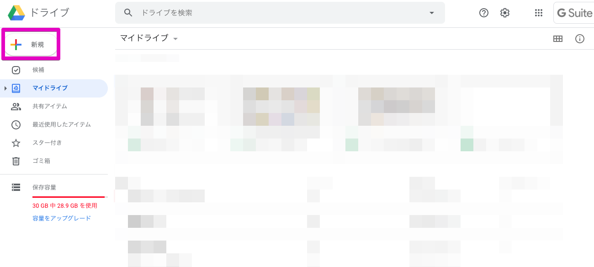 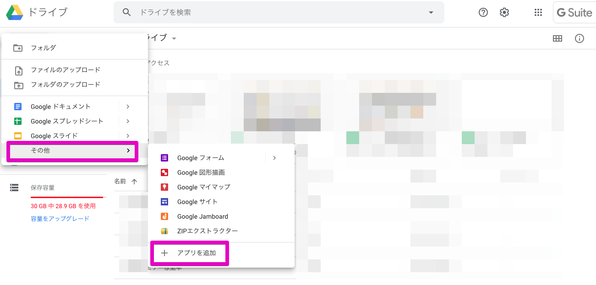 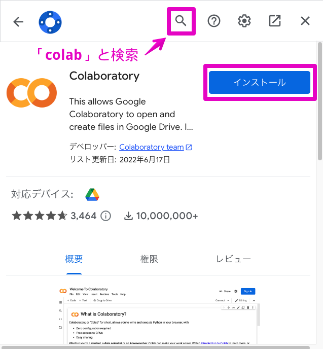アップロードしたファイルをクリックし、ファイルを開きます。下記の画面が表示されればプログラミングを開始することができます。
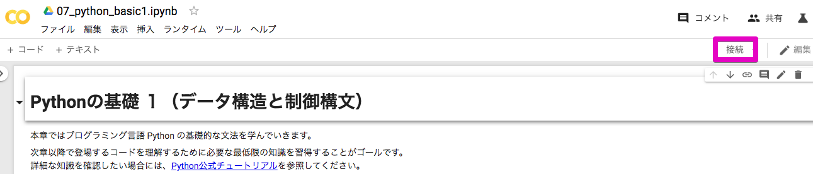プログラミングを開始するためには右上にある「接続」ボタンをクリックし、ノートブックをサーバーに接続します。
もし、新規のノートブックを開く際には、下記の手順に沿ってファイルを作成します。
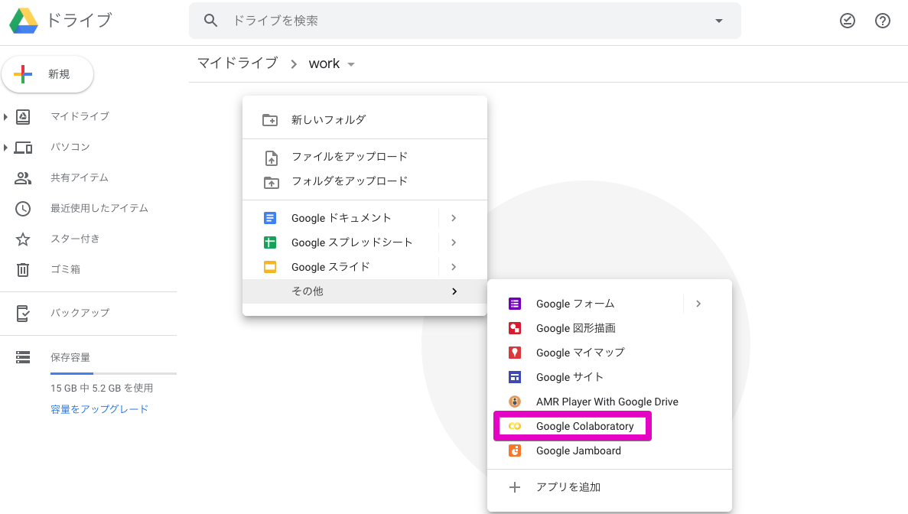2.3. Colab の基本的な使い方
Colab 上の Jupyter Notebook を以降、単にノートブックと呼びます。
ノートブックは、複数のセルと呼ばれるブロックを持つことができます。 新しいノートブックを作った直後では、何も書かれていないセルが一つだけ存在している状態になっています。 セルの内側のどこかをクリックすると、そのセルを選択することができます。
セルには、コードセルとテキストセルの 2 種類があります。コードセルは Python のコードを書き込み、実行するためのセルであり、テキストセルは、Markdown 形式で文章を書くためのセルです。
それぞれのセルタイプについてもう少し詳しく説明をします。
コードセル
コードセルは、Python のコードを書き込み、実行することができるセルです。 実行するには、コードセルを選択した状態で、Ctrl + Enter または Shift + Enter を押します。 試しに、下のセルを選択して、Shift + Enter を押してみてください。
[ ]:
print('Hello world!')
Hello world!
すぐ下に、Hello world! という文字列が表示されました。上のセルに書き込まれているのは Python のコードで、与えられた文字列を表示する関数である print() に、'Hello world!' という文字列を渡しています。これを実行したため、その結果が下に表示されています。
テキストセル
テキストセルでは、Markdown 形式で記述された文章を扱います。試しに、このセルをダブルクリックしてみてください。テキストセルが編集モードになり、Markdown 形式で文章を装飾するための、先程までは表示されていなかった記号が見えるようになります。
その状態で Shift + Enter を押してみましょう。元の文章の表示に戻ります。
ファイルの読み込みとダウンロード
ファイルをアップロードする方法
ノートブック上に直接アップロード
資料では、画像ファイルのアップロードを行いますが、CSV やテキストなどのファイルも基本的に同じ方法でアップロードできます。
- 左サイドバーに表示されているファイルマークをクリックします。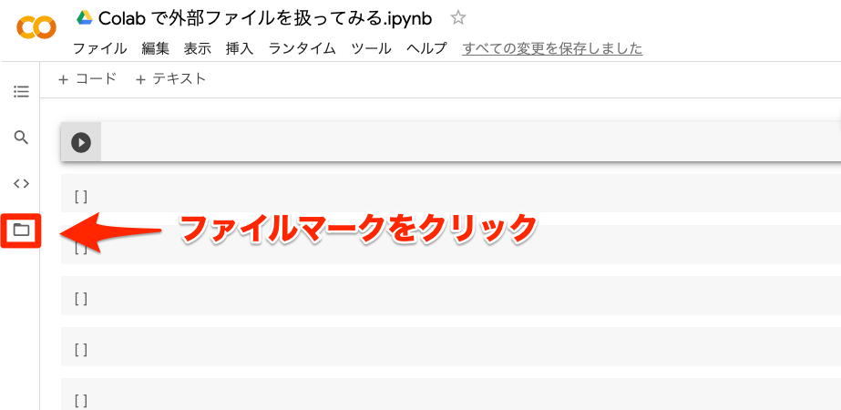
- 表示されたサイドバーに、ファイルをドラッグ & ドロップしましょう。（画像ファイルで行っていますが、csv ファイルも同じ方法でアップロードできます。）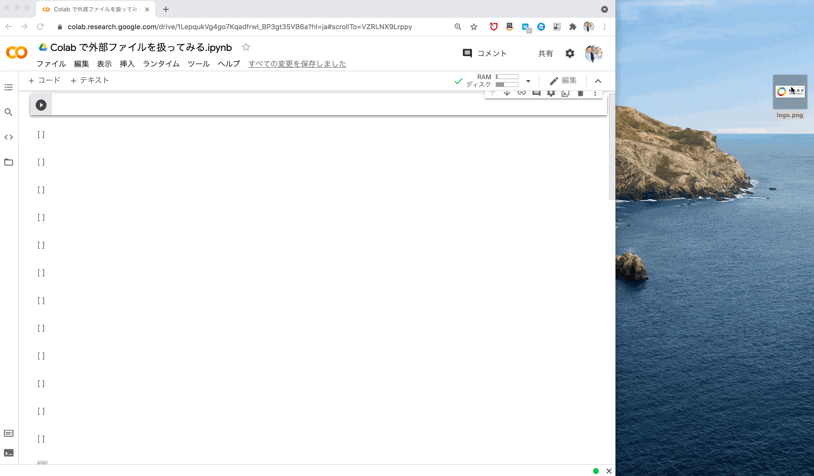
- アップロードが完了すると下図のようにファイル名が表示されます。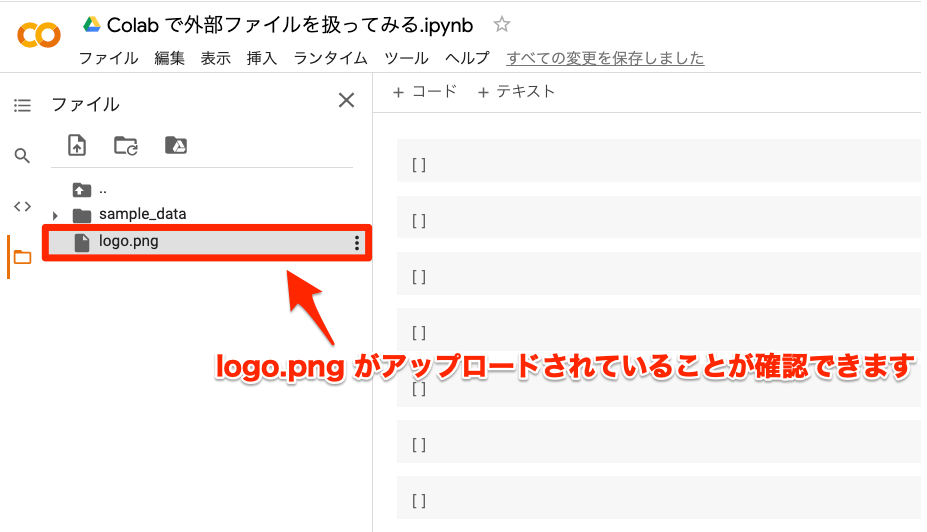
- 中身を確認したい時は、ファイルをクリックしましょう。右サイドバーでファイルの中身が確認できます。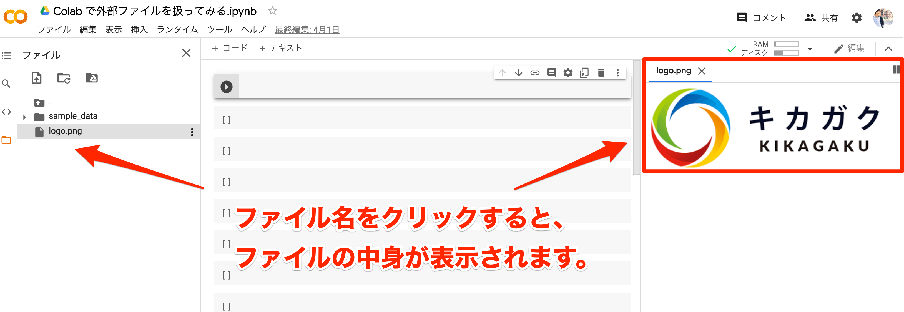
【参考】Google Drive にマウントする方法
- 左サイドバーに表示されているファイルマークをクリックします。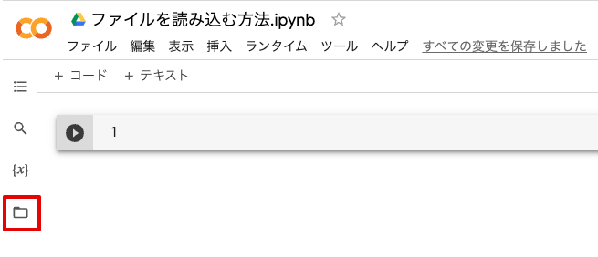
- Google Drive のマークをクリックします。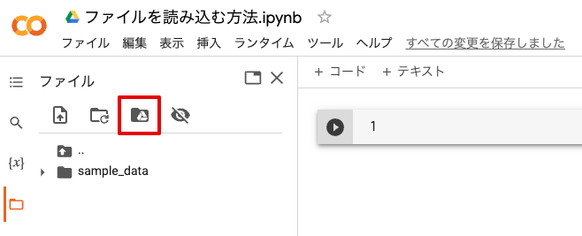
- Google Drive へのアクセスを許可します。
- 「コードを実行して下さい。」というメッセージが出たらコードを実行して下さい。（表示されない場合はそのまま次のステップへ進んで下さい。）
- サイドバー内に Drive が表示されていれば接続ができており、ドライブ内のファイルが確認できます。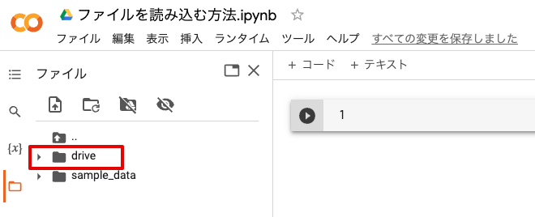
アップロードしたファイルを読み込む
アップロードできたファイルをノートブック上で読み込んでみましょう。
csv ファイルの読み込み
ノートブック上で以下のコードを実行すると df という変数名で csv データの読み込みを行うことができます。
[ ]:
import pandas as pd
df = pd.read_csv('matrix_01.csv')
pd.read_csv('ファイルパス') で読み込むことができます。pd.read_excel('ファイルパス') を使用します。読み込みを行う際の詳細な設定については以下の参考資料に記入しています。df.head() で先頭 5 行を表示させることができます。[ ]:
df.head()
データを書き出してダウンロードする方法
ノートブックで扱ったデータを csv ファイルとして書き出して、サイドバーからダウンロードすることができます。
データの書き出し
df.to_csv('ファイル名.csv') でデータを csv ファイルとして書き出すことができます。df.to_excel('ファイル名.excel') を実行します。[ ]:
df.to_csv('test.csv', index=None)
test.csv という名前のファイルがサイドバーに表示されていれば書き出すことができています。
書き出したデータのダウンロード
書き出したデータをダウンロードする手順を解説します。
- サイドバー上のファイル名にカーソルを当てます。すると、3 つのドットが縦に並んだアイコンが表示されるので、そちらをクリックしましょう。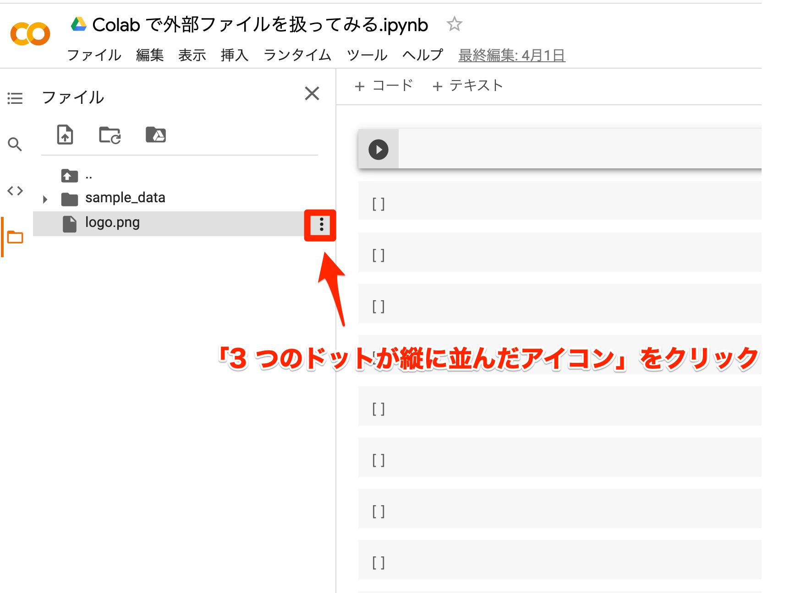
- 「ダウンロード」をクリックすると、ファイルをダウンロードできます。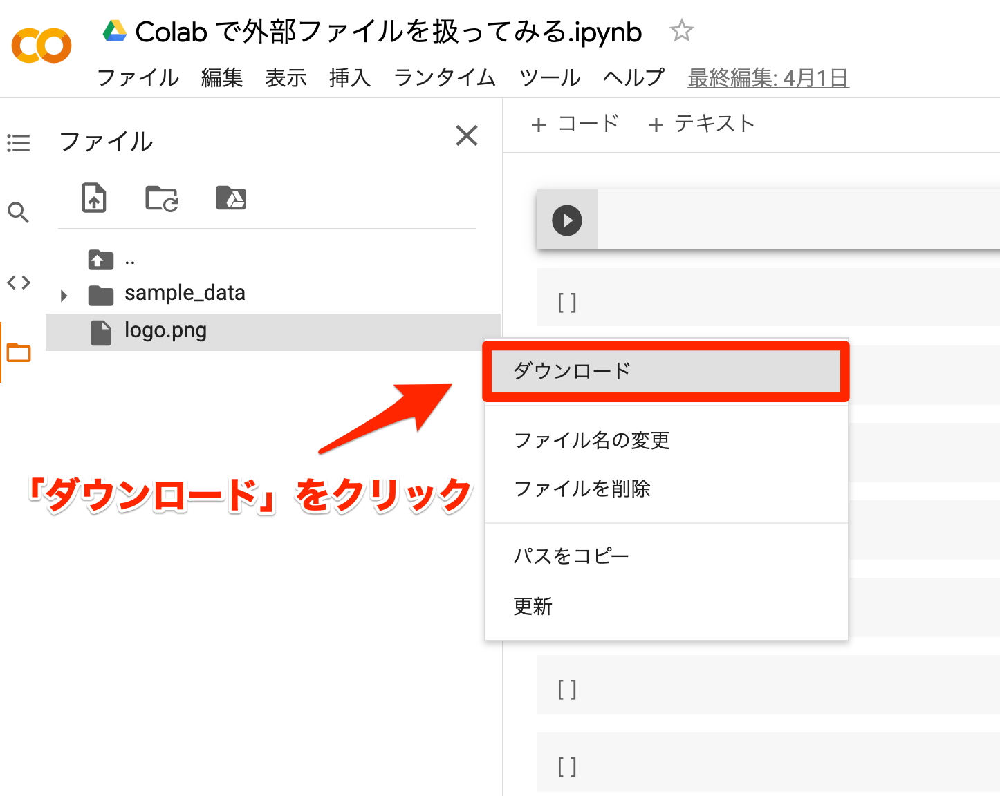
コードまとめ
ファイルの読み込みから書き出しのコードです。
説明 |
コード |
|---|---|
csv ファイル読み込み |
|
Excel ファイル読み込み |
|
csv ファイル書き出し |
|
Excel ファイル書き出し |
|
ノートブックを共同編集する方法
作成したノートブックを共有または、共同編集することもできます。
- 共有をクリックします。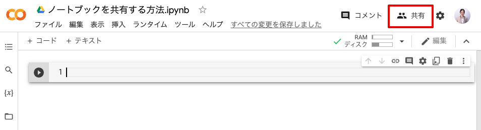
一般的なアクセスを「リンクを知っている全員」に変更します。
- 役割を「編集者」に変更します。（閲覧者を選択すると閲覧だけの権限で共有することができます。）
- リンクをコピーをクリックしてコピーされたリンクを共有するだけでリンクを知っている人が共同編集することが可能になります。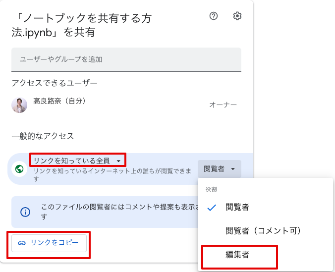
プチ演習
先程使用した matrix_01.csv ファイルを手順の内容を行い提出をして下さい。
matrix_01.csv ファイルを df として読み込むデータを各地点の距離から時間に変更し
df_timeという変数名で定義する
# 時速 40 km で各地点間を移動した場合の時間へ変更
df_time = df / 40
df_timeに格納したデータをmatrix_氏名.csvとして書き出す- 以下の内容を指定した Teams の指定されたスレッド内に提出する・書き出された
matrix_氏名.csvファイル・コーディングを行ったノートブックの URL（編集権限を「リンクを知っている全員」に変更して下さい）
GPU を使用する
Colab では GPU を無料で使用することができます。初期設定では GPU を使用しない設定となっているため、GPU を使用する場合は設定を変更する必要があります。 GPU を使用する場合は、以下の手順で設定の変更を行って下さい。
- 画面上部のタブの中の 「Runtime」 (または「ランタイム」) をクリックし、「Change runtime type」 (または「ランタイムのタイプを変更」)を選択します。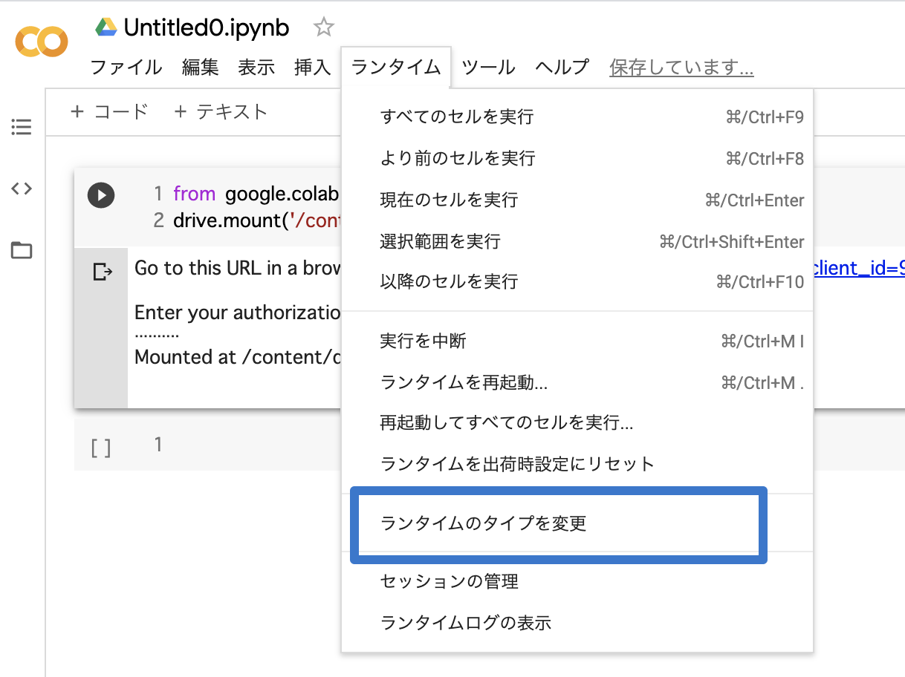
- 下記の画像の様に 「Hardware accelerator」 (または「ハードウェアアクセラレータ」)を GPU に変更します。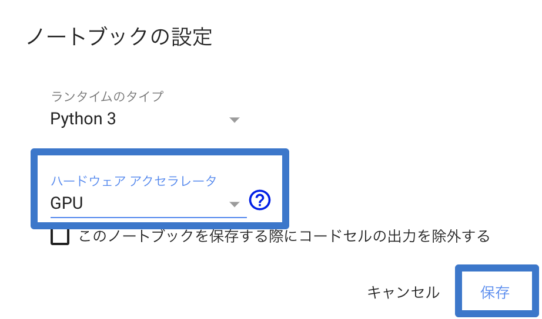
これで Colab 上で GPU を使用できるようになりました。
2.4. Tips
コードセル
コメントアウトとは、コード中で実行時に無視したい行やコメントを選択した状態で行う操作です。 Python では、# の後に続く文字列は全てコメントとして無視され、実行時に評価されることはありません。
コードに対してメモを残したい時など、コードセル内にコメントを残したい場合に使用します。
[ ]:
# コメント
テキストセル
実行すると以下のように見出しを追加したらい箇条書きを表示できます。
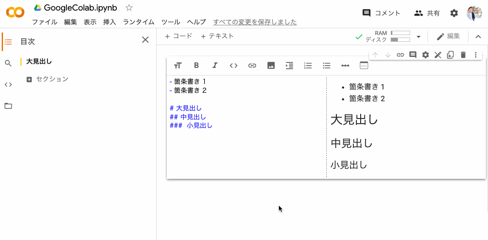Colab の便利なショートカット
最後に作業効率を向上するためにショートカットコマンドを紹介します。Colab を使用中に、セルのタイプの変更やセルの複製・追加などの操作をする場合は、メニューから該当する項目を選ぶ方法以外に、キーボードショートカットを利用する方法もあります。
下記によく使うショートカットキーをまとめておきます。
説明 |
コマンド |
|---|---|
セルの実行 |
Shift + Enter |
コメントアウト |
Ctrl + / |
コードの補完機能 |
Ctrl + Space |
Markdownモードへ変更 |
Ctrl + M → M |
Codeモードへ変更 |
Ctrl + M → Y |
セルを上に追加 |
Ctrl + M → A |
セルを下に追加 |
Ctrl + M → B |
セルのコピー |
Ctrl + M → C |
セルの貼り付け |
Ctrl + M → V |
セルの消去 |
Ctrl + M → D |
Ctrl + M → となっているコマンドは二段階になっており、まず Ctrl + M を押してから、それぞれの機能によって異なるコマンドを入力する形になっています。
ファイルパスを取得する方法
ファイルパスの取得方法を紹介します。直接打ち込むことも可能ですが、タイプミスが起きやすいためこの後紹介する取得方法を推奨します。
- サイドバーを開きます。
パスを取得したいファイルにカーソルをあわせ「︙」をクリックして下さい。
- 「パスをコピー」をクリックするとファイルのパスを取得することができます。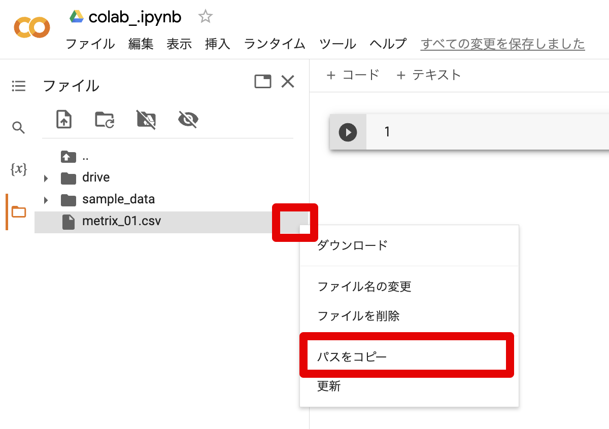